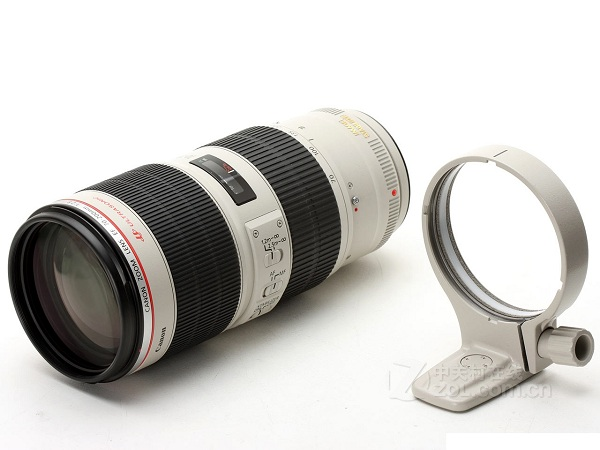

 EF 70-200mm f/2.8L IS II USM是专业摄影师和摄影发烧友常用远摄变焦镜头的人气款EF 70-200mm f/2.8L IS USM的进化版，光圈大，十分明亮。在体育摄影、人像摄影、风光摄影等领域均有广泛应用。自动对焦由安静迅速的USM超声波马达驱动，能够帮助用户准确捕捉快门时机。镜头采用了5片UD（超低色散）镜片和1片萤石镜片，对色像差进行了良好的补偿。镜头的全焦段均具有与L级镜头相称的高分辨力和对比度。此外，在对焦镜片组（第2组镜片）配置的UD镜片，可以良好地补偿因合焦位置容易出现的倍率色像差。采用优化的镜片结构以及超级光谱镀膜，能够有效抑制数码相机中易出现的眩光与鬼影。而经过强化的手抖动补偿机构IS影像稳定器可带来最大相当于约4级快门速度的手抖动补偿效果。不仅如此，EF 70-200mm f/2.8L IS II USM通过提高镜身的强度、改善元件连接处以及采用防水滴防尘※结构等，实现了更高的耐用性与牢固性，能够满足专业摄影师在苛刻拍摄条件下使用的需求。另外，镜头的最近对焦距离也缩短至约1.2米。是一款使用自由度得到进一步提升的高端远摄变焦镜头。
※本镜头虽然具有一定的防水滴性能，但是如果在雨天拍摄时，请尽量不要淋湿。
| 镜头焦距 | 70-200mm |
|---|---|
| APS-C画幅下的35mm规格换算焦距 *1 | 约112-320mm |
| 镜头结构 | 19组23片 |
| 光圈叶片 | 8片（圆形光圈） |
| 最小光圈 *2 | 32 |
| 最近对焦距离 | 约1.2米 |
| 最大放大倍率 *3 | 约0.21倍 |
| 驱动系统 | 环形USM超声波马达 |
| 手抖动补偿效果 | 约4级 |
| 滤镜直径 | 77毫米 |
| 最大直径及长度 | 约Φ88.8×199毫米 |
| 重量 | 约1490克 |
光圈值：f/4.0
快门速度：1/15秒